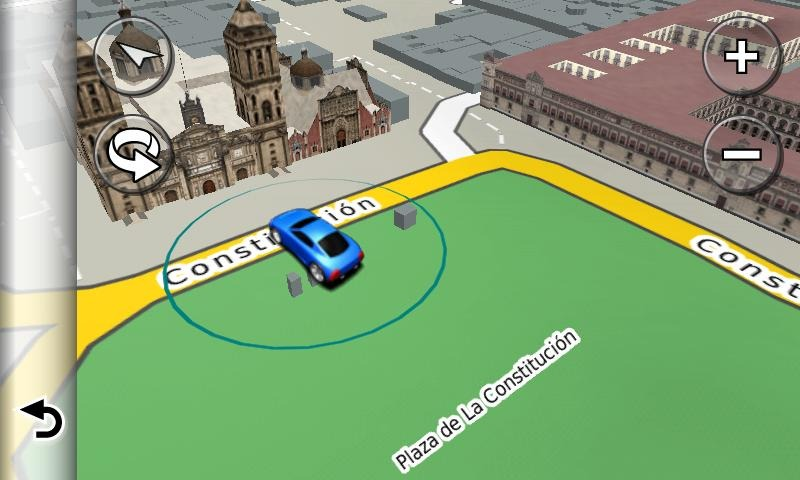
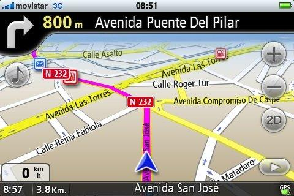

Si buscas una forma diferente y más activa de navegación,"GPS Trafico" puede ser una buena opción para ti.
 
El GPS Trafico tiene una tecnología que nos permite fijar a escala la posición de un objeto o vehiculo,con la cual podremos encontrar las rutas mas rapidas o sin trafico,con las cuales podras llegar mas rapido y sin contratiempos.
Informes:
Ing. Erik Raul Mendoza Ruiz
Cel. 33-14-173662